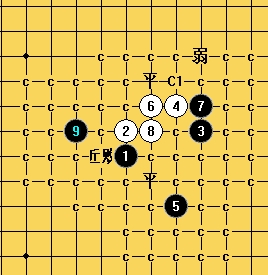

大残月求解
#1 大残月求解作者：没定式随便下 发表时间：2009-10-2 11:14:18
针对大残月这个8，以下3个9都有一个唯一的10杀不掉，请教高手如何杀之？前面都可以换。或者这个4的两打换哪个5能必胜？
=======上图对应的爱五子棋谱代码如下，以便你拆解：========
h8h9k9j10g8i8j7g9h7i6i7k7
======================================================
=======上图对应的爱五子棋谱代码如下，以便你拆解：========
h8h9k9j10g8i8j7g9i7i9
======================================================
=======上图对应的爱五子棋谱代码如下，以便你拆解：========
h8h9k9j10g8i8j7g9i6h10k8l9k10k7f9h7
======================================================
#2 Re:大残月求解作者：黑暗苏醒 发表时间：2009-10-2 15:53:29
=======上图对应的爱五子棋谱代码如下，以便你拆解：========
h8h9k9j10i7j8j6k5g6
====================================================== 我是换的这个黑5手 6唯一强防 8唯一 9手终结型
#3 Re:大残月求解作者：没定式随便下 发表时间：2009-10-2 16:57:19
谢谢LS的回答，这个5是一打，是可以必胜的。
=======上图对应的爱五子棋谱代码如下，以便你拆解：========
h8h9k9j10i7j8k7
======================================================
这个7要相对简单。
另外，两打的话哪个5可以必胜？
#4 Re:大残月求解作者：26 发表时间：2009-10-3 11:30:02
哎呀,我还以为这个5可以胜......
目前我是找不到可以胜的二打5了.
#5 Re:大残月求解作者：剑魔令狐冲 发表时间：2009-10-4 17:59:57
=======上图对应的爱五子棋谱代码如下，以便你拆解：========
h8h9k9j10j6
======================================================逆刃老师 这个5怎么样
#6 Re:Re:大残月求解作者：逆刃 发表时间：2009-10-4 19:14:16

这个5手是个骗，无法做到必胜，到9手前面都是唯一。黑白都下对的话应该是平衡局面，但是其中黑白都有很多欺骗性的手段。
#7 Re:大残月求解作者：剑魔令狐冲 发表时间：2009-10-7 19:38:16
=======上图对应的爱五子棋谱代码如下，以便你拆解：========
h8h9k9j10g8i8g10
======================================================7手这样下如何
#8 Re:大残月求解作者：失落刀 发表时间：2009-10-8 18:13:13
7楼的7好，等地毯：）#9 Re:大残月求解作者：失落刀 发表时间：2009-10-19 22:00:34
=======上图对应的爱五子棋谱代码如下，以便你拆解：========
h8h9k9j10g8j8j7i10
======================================================
唯一6.
#10 Re:大残月求解作者：失落刀 发表时间：2009-10-20 21:12:54
=======上图对应的爱五子棋谱代码如下，以便你拆解：========
h8h9k9j10g8j8j7i10g9g10h10i7i6k8
======================================================
#11 Re:大残月求解作者：失落刀 发表时间：2009-10-20 21:13:28
=======上图对应的爱五子棋谱代码如下，以便你拆解：========
h8h9k9j10g8j8j7i10g9k10
======================================================
这个9还没有找到必胜。
#12 Re:大残月求解作者：失落刀 发表时间：2009-10-20 21:14:59
=======上图对应的爱五子棋谱代码如下，以便你拆解：========
h8h9k9j10g8j8j7i10f8e8
======================================================
这个9地毯胜。
#13 Re:大残月求解作者：失落刀 发表时间：2009-10-21 18:52:10
=======上图对应的爱五子棋谱代码如下，以便你拆解：========
h8h9k9j10g8j8j7k10
======================================================